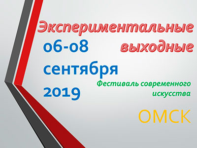
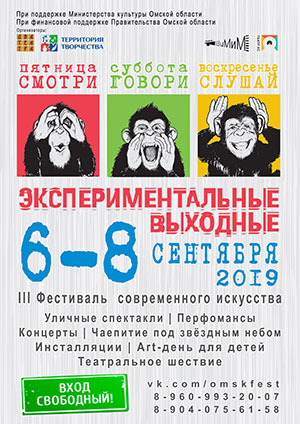

Фестиваль современного искусства "Экспериментальные выходные" - 2019
С 06 по 08 сентября 2019 года в Омске прошёл III фестиваль современного искусства "Экспериментальные выходные", посвящённый Году театра в России. Это творческая инициатива АНО "ТО "ДВА ТЕАТРА" и ОРОО "Территория творчества". Проект состоялся при поддержке Министерства культуры Омской области и финансовой поддержке Правительства Омской области.
Мероприятия проекта проводились в уличной городской среде, что привлекало большее количество зрителей. Площадками фестиваля были ГЦНТ, Омская крепость, Городской музей "Искусство Омска", Театральный сквер, улица Ч. Валиханова, Любинский проспект и другие центральные улицы города, ПКиО "Зеленый остров", Областная библиотека для детей и юношества, Открытое молодежное пространство в Библиотеке им. А.С. Пушкина.
Каждый день фестиваля проходил под определенным девизом: "Смотри", "Слушай" и "Говори". В первый день омичи смогли увидеть яркое театрального шествие, в котором приняло участие порядка 150 человек, это были актеры молодежных, студенческих, образцовых и народных театров Омска и Омской области. На территории Омской крепости состоялось торжественное открытие фестиваля с творческими номерами, представлением программы и залпом бутафорской пушки в честь начала "Выходных". Затем был показан спектакль театральной студии "Гримаски" - драматическая поэма "Баллада о крыльях" Р. Рождественский (режиссер Татьяна Храмова). Спектакль органично вписался в архитектурный ансамбль Омской крепости, исполнение было пронзительным и наполненным. Затем все участники шествия пополнили свой багаж визуальных впечатлений на иммерсивной выставке “Авангард: от Малевича до Шагала”, которую представили Мультимедийная лаборатория "Реально" и Городской музей "Искусство Омска".
Второй день фестиваля проходил под девизом "Смотри!" и начался с мероприятия для детей и их родителей. Программа выходного дня для молодой семьи "Потешный дом" включала в себя игровые программы детского клуба "Непоседа", игры с аниматорами "ТО "Два театра", игровую зону магазина настольных игр "Мосигра", мастер-классы от арт-студии Елены Кузнецовой и орф-педагога Елены Кургановой по музыкальному направлению, показ спектакля "Сказки для карапузов" (от 2 до 5 лет). В театральном сквере сложилась теплая семейная атмосфера, благодаря хорошей солнечной погоде и усилиям организаторов, участников и самих зрителей "Потешного дома". Всего за два часа программы в мероприятии приняло участие около 300 человек. Продолжил день "Слушай" спонтанный музыкальный флешмоб, его участниками стали учащиеся вокального отделения ДШИ города и музыкального училища (колледжа) им В.Я. Шебалина (класс преподавателя Сухотериной Натальи Маратовны) В мероприятии приняли участие 40 артистов. Завершился день на "Зелёном острове" атмосферным мероприятием "Чаепитие под звёздным небом": концерт этнической музыки "Siberian sound healers", сцены из спектакля "Как оттенить тишину" по сказкам С. Козлова (театр "КС", режиссер Наталья Козловская), лекция по астрономии, наблюдение за звёздным небом (ведущий Владимир Крупко). Несмотря на начавшуюся во время спектакля грозу, всё состоялось! К большому сожалению организаторов, из-за погодных условий пришлось отменить выступление группы "Монтаж". Лекция по астрономии проходила в необычной атмосфере под крышей летней эстрады, проекция звездного неба на "ракушку" создавала ощущение планетария, а укутанные в пледы зрители попивали чай из термосов не только чтобы соответствовать романтичному названию мероприятия, но и чтобы согреться. Но уходить никому не хотелось.
Третий день фестиваля проходил под девизом "Говори", в его программе был показ иммерсивного спектакля, созданного участниками лаборатории "Город говорит". Ведущим лаборатории стала Ирина Лядова, режиссёр театра "ОСТ" (г. Екатеринбург), которой за короткое время удалось сложить достойный спектакль с идей, смыслом, хорошими актерскими работами и командной слаженностью. Проект впечатлил и заинтересовал всех: зрителей, участников, случайных прохожих. Продолжила день актуальная конференция на тему "Как организовать фестиваль в Омске?", где спикерами были лидеры общественных инициатив, организаторы фестивалей в городе Омске. Было радостно, что получился действительно конструктивный разговор: звучали вопросы, рождались перспективные предложения, налаживались связи между организаторами настоящих и будущих культурных событий. Завершал день "Говори" поэтический спектакль "Балаганчик" А. Блок, театр "ШуМиМ", реж. Анна Козловская. Камерное пространство библиотеки идеально подходило для восприятия этого спектакля. К сожалению, зал не вместил всех желающих, но омские зрители смогут посмотреть спектакль в рамках осеннего сезона театра "ШуМиМ" на камерной сцене ГЦНТ.
"На мой взгляд, получились очень интересные выходные! Каждый день были моменты счастья, когда все совпадает: и внешнее, и внутреннее. Так было на шествии, когда прошёл дождь перед самым его началом. Так было, когда пели и радовались все на музыкальном флешмобе на улице Ч. Валиханова и когда играли музыканты в момент надвигающейся грозы, а лекция о звездах в "разрушенном Колизее"... Так было всегда на спектакле-путешествии лаборатории иммерсивного театра... И ещё я очень рада, что у нас на ВСЕХ мероприятиях было много зрителя, что на камерные проекты регистрация закрывалась почти сразу. Ура! Мы интересны, нам интересно". Анна Козловская – режиссёр ТО "ДВА ТЕАТРА", идейный вдохновитель и организатор фестиваля.
Фестиваль "Экспериментальные выходные", безусловно, внес свой вклад в развитие культурной жизни Омска. Всего в мероприятиях проекта приняло участие 2000 человек.
{kind=link}
- Омская региональная общественная организация "Территория творчества"
- Автономная некоммерческая организация "Творческое объединение "ДВА ТЕАТРА".
- От ОРОО "Территория творчества" Мосейкина Людмила Александровна, moseykina24@mail.ru, тел. 22 43 67
- От АНО "Творческое объединение "Два театра", dvateatra@mail.ru Наталья Козловская – 89045879658 Татьяна Трошина – 89514131522 Людмила Миронова – 89059442330.